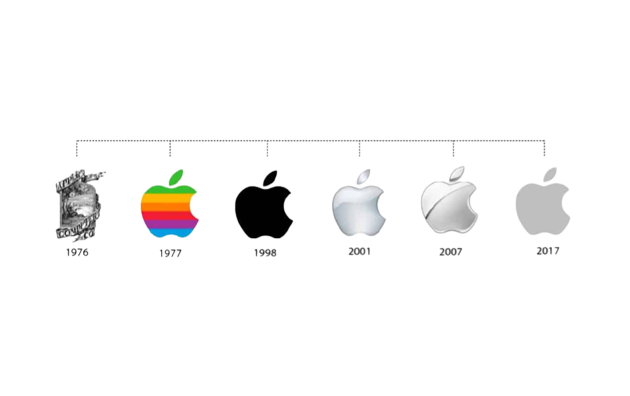
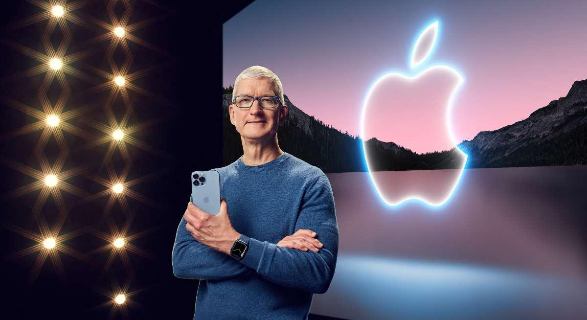

INTRODUCTION
Apple de son nom complet Apple Inc., est une compagnie multinationale américaine technologique qui
développe
et commercialise des produits électroniques grands publics. Parmi les plus connus on retrouve :
l’iPhone,
l’iPad, le Macintosh, l’Apple Watch…
Depuis des années elle a su se remarquer comme l’entreprise qui a totalement révolutionné le monde de
l’informatique et de la technologie avec ses nombreuses innovations et son design unique . Apple fait
partie
des GAFAM, et est désigné comme l’une des entreprises les plus influentes au monde
HISTOIRE DU LOGO

Ce logo de la pomme croqué est une référence au physicien Isaac Newton (idole de Steve Jobs et de Steve
wozniak)
car la pomme fut l’élément qui inspira à ce dernier les lois sur la gravitation universelle. Cependant la pomme croqué est une référence à Alan turing, père de l'informatqiue aynt inventé l'un des premiers ordinateurs et mort d'une pomme empoisonnée.
• Statut Jurdique :
Apple est une société anonyme (capitale de départ : 37 000 $)
• Secteur d’activité :
Secteur secondaire, Apple est une entreprise d’informatique qui développe des ordinateurs, des lecteurs de
musique, des montres connectés, des smartphones et tout types d’appareils connectés .
• Nombre de salarié (Monde) :
En 2022, Apple contrait plus de 165 000 employés (Apple store, c’est-à-dire dans sales magasins avec des
vendeurs et techniciens spécialisés dont 2465 ingénieur et développeur travaillant dans la maison mère )
• Taux de femme 34,8 % :

• Siège social :
Cupertino, Californie, États-Unis
• Direction (CEO) :
Tim Cook (depuis le 24 août 2011)
